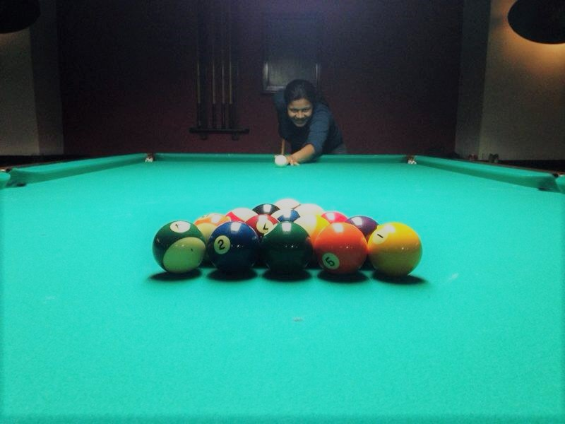
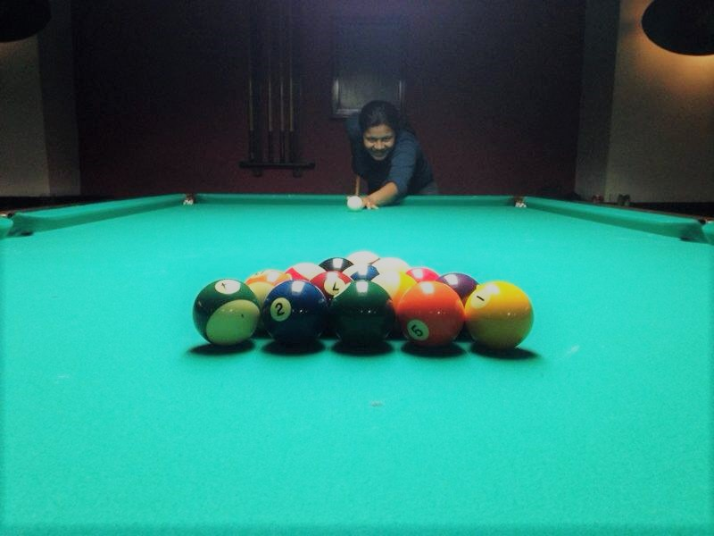

About me
Who am I?
Six years of experience in analysis and development of web-based and client-server systems. Experienced in system architecture definition in .NET, best practices of software development, design patterns and unit testing. Experienced also in componentization, SOA, UML, OOP, distributed applications, AngularJS, Asp.Net MVC, Web API, Rest, .Net Framework 4.0 and above. I am a passionate and enthusiast in software developing. I like being up-to date about new technologies by watching conference videos, reading blogs and books and writing my own codes at home to test a new technology.
- My dogs, are my better friends!
- Food - All food.
- The place favorite Dublin
- Sport ball pool
What I like?

 

But ok, What linguagem do I like?
I love tecnologia.